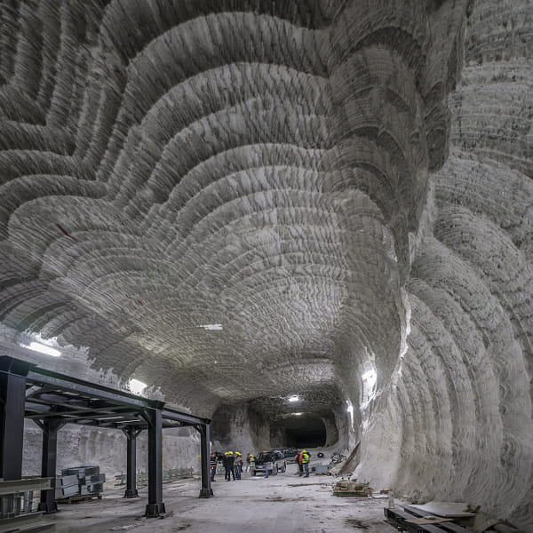
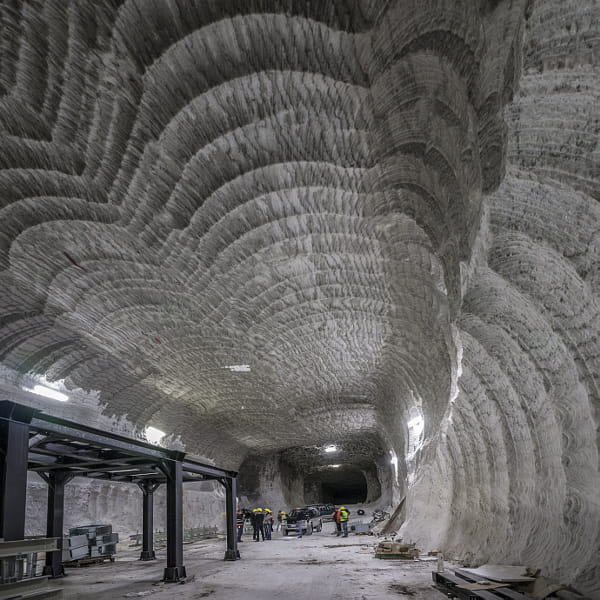

Soľ v súčastnosti
Dnes je najvýznamnejšou oblasťou pre ťaženie soli v Taliansku ostrov Sicília.
Soľné bane Realmonte
V súčasnosti existujú tri soľné bane Realmonte v provinciách Agrigento a Racalmuto a Petralia v provincii Palermo, ktoré spravuje spoločnosť Italkali.
Soľné pole sa skladá z rozsiahlej soľnej šošovky zarovnanej podľa pobrežia, ktoré vedie medzi Porto Empedocle a Siculiana. Vrstvy kamennej soli sa pravidelne potápajú z hora do mora so strechou kamennej soli s výškou až 40 metrov. Obsah chloridu sodného v stene je medzi 97 a 98%. Boli tu vytvorené rezervy asi 100 miliónov ton kamennej soli a potvrdila sa aj prítomnosť značného množstva minerálov draslíka.
Bane Realmonte sú schopné vyprodukovať asi 500 tisíc ton soli ročne. Racalmuto sa v minulom storočí stal dôležitým banským centrom a mal určitý nárast aj v soľnom priemysle.Dôležitú úlohu v miestnom hospodárstve majú práve tieto soľné bane.
 

Soľná baňa Petralia
Baňa sa nachádza v šošovkovom, masívnom a vysoko zdeformovanom soľnom telese odparovacej nádrže Caltanissetta. Na soľných stenách je dobre viditeľná vysoko zložená stratifikácia minerálov so silnými vrstvami bieleho halitu striedajúcimi sa s veľmi tenkými tmavými ílovými horizontmi. Napriek vysokému stupňu deformácie a rekryštalizácie niektoré hality stále obsahujú malé jadro primárneho „zakaleného“ kryštálu.
Ťažba kamennej soli pre potreby miestneho obyvateľstva v oblasti Salinella sa uskutočňovala odpradávna, ale do 50. rokov 20. storočia zostávala okrajovou operáciou. Stavba moderných výrobných zariadení (podzemná ťažba, triedenie, balenie a skladovanie) sa začala v roku 1972. K dnešnému dňu je vyrazených viac ako 70 kilometrov tunelov a celý proces výroby potravinárskych aj nepotravinárskych výrobkov. Celé spracovanie kamennej soli, od ťaženia po balenie, sa vykonáva v podzemí.